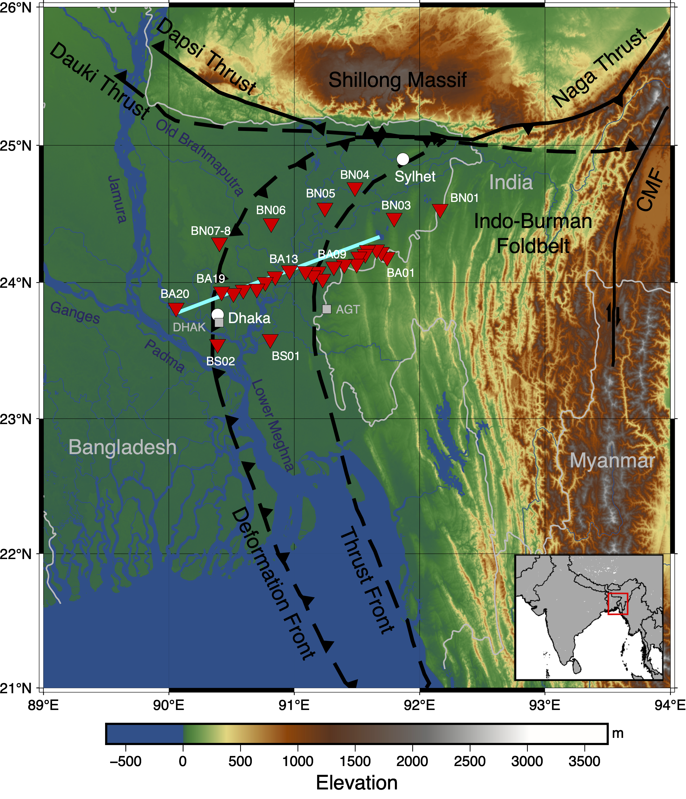

Motivation
The Indo-Burman Margin is one of the most unusual subduction systems on Earth. Here, the Indian plate descends beneath Southeast Asia whilst covered by an enormous pile of sediments. Delivered from the Himalayas by the Ganges-Brahmaputra River system, these sediments form the largest delta in the world and strongly influence deformation, earthquake behavior, and the transfer of material from the Earth's surface into the mantle across the subduction zone.Despite its importance, the subsurface structure of the incoming plate remains poorly understood. Thick sediment cover obscures the crust and upper mantle, making it difficult to determine the composition, structure, and fluid distribution of material entering the subduction zone. How do sediments evolve as they are buried and deformed? What is the structure of the underlying crust and mantle? By answering these questions, we can better understand the locked nature of this plate boundary and the seismic hazards facing one of the most densely populated regions on the planet.
To investigate these questions, we analyzed seismic data from the Bangladesh-India-Myanmar Array (BIMA), a broadband seismic experiment spanning the subduction margin in Bangladesh. We focused on two complementary seismic observations: (1) Rayleigh waves (a type of surface waves) generated by earthquakes and ambient seismic noise, and (2) body waves scattered across strong subsurface boundaries. Surface waves provide robust constraints on seismic velocity throughout the crust and upper mantle, while scattered waves are particularly sensitive to abrupt changes in structure. By combining these datasets, we can image both gradual changes in Earth properties and sharp geological boundaries that would be difficult to resolve using either method in isolation.
Before exploring the results, it is helpful to understand why surface waves are such powerful tools for imaging Earth's interior.